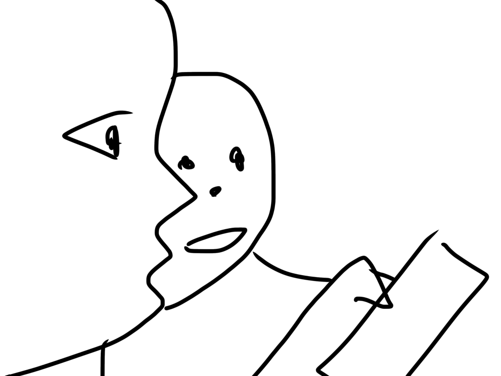
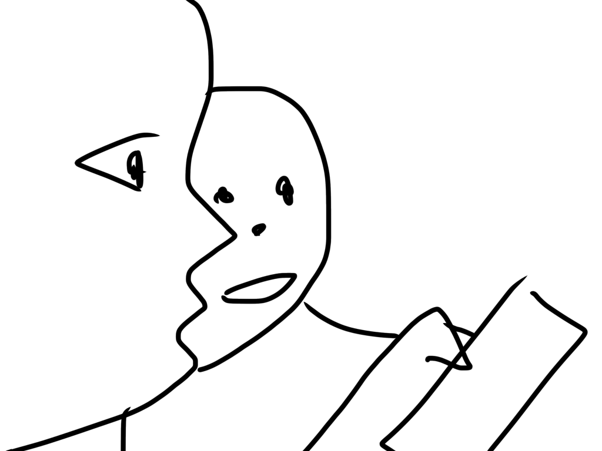

-----news-----
縦スクロールのデザインは、とりあえず三種。
左画像に右テキスト（ここ）、レスポンシブ対応。
テキストブロック、背景を濃い色で。
画像を横並びに二種配置。
タイトルのロゴは要検討。
シナリオ：構造大幅変更の可能性。
キャラクター：大まかな配置のみ完了
縦方向にスクロールしたかったので、画像を追加しました（かさまし）。
スクロールしてふわっと表示。これはロマンよね。
目的のページまで3ジャンプ以内でたどり着ける構造をがベスト。
キャラクターとギャラリーは同じでは。と思っている今日この頃。
ここは、よくあるページの更新状況を記録する場所として使う。のはどう？
2021/03/08：タイトル画面更新new!みたいな
取り敢えずは、私の作業中に浮かんだボヤキで文字数稼いでおくね。
ついでにポエム載せちゃう。これ、深夜テンション。
-----shortstory-----
「君は白」
五感が捉えた感覚を脳は拒み、私は眠る。
睡眠とは、謂わば知覚の放棄である。そう私に言ったのは誰だったか、
思い出すことはついぞ無く哀れにも誘惑に弱いこの精神は、1番大切なものを掴んだまま、
ただ確実に微睡という海に溺れてしまったのです。
湿った用紙に一滴インクを滴下する。すると、それはじんわりと境界線を暈しながら無垢な白を浸食するでしょう。
無意識から意識への推移とは、多分そんな感じだ。
「ただの起床でしょう？」
寝起きの感覚を言葉にする事は意外と難しいのですよ、と笑う君はこの白い部屋によく馴染んでいました。
変な言葉で私を混乱させようとする君も、君の戯言に惑わされに行く日も、全ては泡沫の記憶です。
いつか爆ぜて混じって白に戻るのでしょうか。そんな不安を喉に貼り付けたまま今日も私は思っても無い事を吐く。
少しムッとしたその顔が好きでした。何か考えていそうで何も考えていないソレが好きでした。
清潔な部屋に君が居た。
その部屋の白に、君が侵食されてるような気がして。私は初めてその手を握ったのです。
どうしたのと聞かれても、どうしたんでしょうと自問する事しかできませんでした。
君は簡単なことも言葉にできない馬鹿だ。
この他愛無いコミュニティケーションに他意はない。だから、このくだらない物語に結末はない。
さっさと眠ってしまえ、朝がきてしまうよ。
-----todo-----
 
